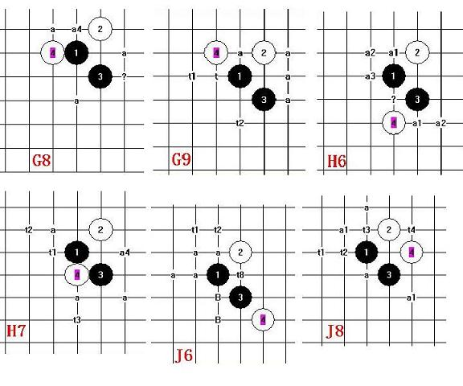

我的蒲月五打未解决的还有这么多!
#1 我的蒲月五打未解决的还有这么多!作者：安娜制作所 发表时间：2010-10-28 13:41:13
我的蒲月五打未解决的还有着么多点!有原意提供帮助的朋友请联系我! atna88@qq.com［ 踵酃 于 2010-10-28 19:58:03 时花20金币送鲜花一朵］
#2 Re:我的蒲月五打未解决的还有这么多!作者：冷酒一杯 发表时间：2010-10-28 18:01:24
辛苦呀。很累的活#3 Re:Re:我的蒲月五打未解决的还有这么多!作者：岳麓小棋后 发表时间：2010-10-28 18:19:48

#4 Re:我的蒲月五打未解决的还有这么多!作者：踵酃 发表时间：2010-10-28 19:55:38

#5 Re:我的蒲月五打未解决的还有这么多!作者：淡红的秋樱 发表时间：2010-10-28 22:06:54
5打没有几个图好走的。#6 Re:我的蒲月五打未解决的还有这么多!作者：安娜制作所 发表时间：2010-10-29 8:21:53
是啊!剩下的都是最难的,做到晕头转向了!我先休息一阵!有愿意帮助我完成五打的朋友,可以问我拿剩余五打点的研究包! atna88@qq.com#7 Re:我的蒲月五打未解决的还有这么多!作者：陈唯一 发表时间：2010-10-29 16:14:33
=======上图对应的爱五子棋谱代码如下，以便你拆解：========
h8i9i7g8j7o1j9
======================================================这二个五可以必胜，已地毯
#8 Re:我的蒲月五打未解决的还有这么多!作者：陈唯一 发表时间：2010-10-29 16:16:31
=======上图对应的爱五子棋谱代码如下，以便你拆解：========
h8i9i7h7h5
======================================================通
=======上图对应的爱五子棋谱代码如下，以便你拆解：========
h8i9h5h7i7
======================================================必胜
#9 Re:我的蒲月五打未解决的还有这么多!作者：陈唯一 发表时间：2010-10-29 16:17:58
=======上图对应的爱五子棋谱代码如下，以便你拆解：========
h8i9i7h7f9
======================================================通
=======上图对应的爱五子棋谱代码如下，以便你拆解：========
h8h7f9i9i7
======================================================
通
=======上图对应的爱五子棋谱代码如下，以便你拆解：========
h8i9f9h7i7
======================================================必胜
［此帖子已被 陈唯一 在 2010-10-29 16:29:43 编辑过］
#10 Re:我的蒲月五打未解决的还有这么多!作者：陈唯一 发表时间：2010-10-29 16:19:11
=======上图对应的爱五子棋谱代码如下，以便你拆解：========
h8i9i7h7h9
======================================================通
=======上图对应的爱五子棋谱代码如下，以便你拆解：========
h8i9h9h7i7
======================================================据说必胜
#11 Re:我的蒲月五打未解决的还有这么多!作者：陈唯一 发表时间：2010-10-29 16:21:15
=======上图对应的爱五子棋谱代码如下，以便你拆解：========
h8i9i7h7g8g9o1f8
======================================================就这二个6，我没拆，
#12 Re:我的蒲月五打未解决的还有这么多!作者：陈唯一 发表时间：2010-10-29 16:23:05
=======上图对应的爱五子棋谱代码如下，以便你拆解：========
h8i9i7j6g10
======================================================有地毯谱
#13 Re:我的蒲月五打未解决的还有这么多!作者：陈唯一 发表时间：2010-10-29 16:24:56
=======上图对应的爱五子棋谱代码如下，以便你拆解：========
h8i9i7j6h10g10g9h9i11f8f11
======================================================11能地毯的话，就必胜了
#14 Re:我的蒲月五打未解决的还有这么多!作者：陈唯一 发表时间：2010-10-29 16:26:38
=======上图对应的爱五子棋谱代码如下，以便你拆解：========
h8i9i7j8j7
======================================================通
=======上图对应的爱五子棋谱代码如下，以便你拆解：========
h8i9j7j8i7
======================================================必胜
#15 Re:我的蒲月五打未解决的还有这么多!作者：屏蔽 发表时间：2010-10-29 20:25:14
10楼：白8通雨月；白6论坛里有相关讨论，跳三再盖一下，或许有机会。 13楼：9直接走11或许更强。#16 Re:我的蒲月五打未解决的还有这么多!作者：淡红的秋樱 发表时间：2010-10-29 21:40:43
to 13楼，请见此贴13楼
ShowPost.asp?PageIndex=2&ThreadID=10474
［此帖子已被 淡红的秋樱 在 2010-10-29 21:41:20 编辑过］
#17 Re:Re:我的蒲月五打未解决的还有这么多!作者：米 发表时间：2010-10-30 0:38:25
=======上图对应的爱五子棋谱代码如下，以便你拆解：========
h8i9i7j6h10g10g9h9f11f10i11j12e10
======================================================
=======上图对应的爱五子棋谱代码如下，以便你拆解：========
h8i9i7j6h10g10g9h9f11f8h11i11h13
======================================================
13楼这个图的白8之后黑这样可以必胜。
#18 Re:我的蒲月五打未解决的还有这么多!作者：安娜制作所 发表时间：2010-11-1 8:45:01
谢谢各位老师的解答!可能我说的太模糊了,范围太大了!看来具体问题只能具体解答!我发表了两个待解决的点,请大家帮忙看看看! 辛苦各位老师了!